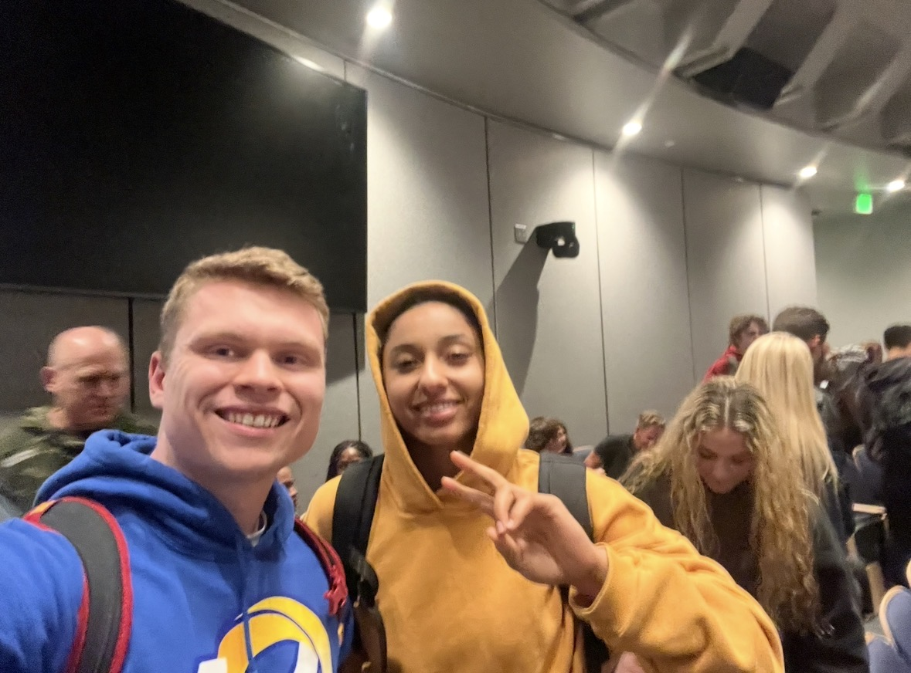
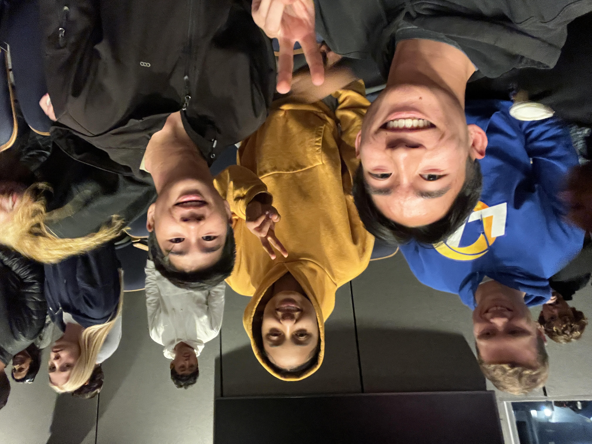
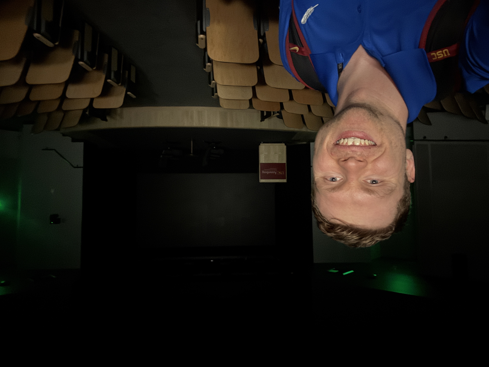

PERSONAL DEVELOPMENT / CAREER
Pete Carroll's "The Game is Life" Class at USC
Introduction
In Spring 2025, Pete Carroll co-taught a class along with the renowned USC Professor of Entrepreneurship Dave Belasco and USC Dean of Religious and Spiritual Life, Varun Soni.

The class was called "The Game is Life" and centered on Coach Carroll teaching his "Win Forever" philosophy which has allowed him to become the only coach ever to win a national championship, a rose bowl and a super bowl as a head coach — except, that in this case, he was helping us apply it to our lives as we navigated the chaos and uncertainty of our college and our early adult years.
When the class was announced in Fall 2024, virtually everyone on the USC campus wanted to sign up for the class, but because of that, the class had to be very selective, and was only able to select ~40 applicants out of almost a thousand.
Much to my disappointment, I myself was actually one of the unfortunate ones that did not get selected for the class of 40, however, a few weeks later, I received an email from Professor Belasco inviting me to the class lecture on Thursday, March 13th, 2025 from 4-6pm in USC's old Annenberg building.
They wanted to open up the class to some of the people who hadn't been selected for the top 40 but who had been close, and when I got the email, I was absolutely ecstatic.
I then went on to attend 2 more lectures later on in the semester, so while I wasn't officially registered in the class, I still felt like I was very much a part of it, part of the journey, particularly since the 3 lectures I did go to had such a large imprint and impact on me.
The class had an incredible impact on EVERYONE who took it, and to underscore how big of an impact it had, famous Sportscaster Rich Eisen, who was at the last class, attended the final class and was in awe like the rest of us. He talked about it in the following YouTube clip from his show and couldn't have put it any better.
For him, even having attended one class had a tremendous impact on him, and I was fortunate enough to be able to attend three — of which my first one, the one I'm primarily focusing on today, was my favorite.
Luckily I have the class recordings to look back on — so while I can't publicly share them — I've listened to them probably dozens of times on hikes in the Coachella Valley desert near Palm Springs (one of my favorite places to get away from the madness of LA since my family inherited a condo from my grandparents in a resort in the greater Palm Springs area) and used the teachings from the class to think through major life decisions and so on and so forth.
Honestly, I learned so much from the class and I probably won't even get close to scratching the surface when it comes to what I learned in the class, but hopefully I cover the biggest points and am able to impact your life positively as well.
Without further ado, let's dive right into my biggest takeaways from the class.
Pete Carroll's Job Advice
To start off, I'm going to jump ahead and talk about the Pete Carroll quote from the class which I think about everyday.
And it's sort of ironic, since it's a hall of fame super-bowl champion head coach giving us college kids job search advice, but I think it still has some profound insights nonetheless, and it's totally transformed the way I go about things.
While I'm not allowed to share the class video recordings, we are allowed to share photos and clips that we ourselves took on our own devices, and one of the few times I did (since most students were completely OFF their devices and just mesmerized/entranced in the class), I happened to capture what ended up being one of the biggest lessons and my favorite Pete Carroll quote from the class:
In the class, Coach Carroll said:
"All of the teachings we're trying to stand for here, is to help you guys figure out that it isn't so much the job you get right now, it's what you DO with the job that you get."
From the class recording, his full quote was:
"And, so you know, all of the teachings that we're trying to stand for here is to help you guys figure out that it isn't maybe about the job that you get right now... it's about what you DO with the job that you get, you know, and how you approach it."
"You want to create a ton of value in whatever job you're in. So much so that you become so valuable to these people that they don't want to let you go and that they're paying you to stay and now you're presenting yourself in a whole different light..."
"So it's a crucial realization, I think. And it's how you treat people, you know, in a way that you help them be the best version of themselves."
So what Pete Carroll was primarily saying here is something that's completely transformed my life and that of many of the people in the class.
He's saying: don't seek out the perfect job or company or opportunity. Instead, MAKE the most of the opportunity that you have and good things will happen to you. The job you have will become your dream job, or at the very least, it will lead to the "dream job" as quickly as possible.
Indirectly, he's also echoing a lot of the other USC talks that I've attended from entrepreneurs where they often mention that leverage is the most important thing in life and business, and that taking ownership and having creativity and self reliance, and CREATING the perfect situation is the way to go over trying to make things perfect.
While I'm sort of being repetitive here, it's 100% true. And I myself have applied this in all areas of my life — from career to school, to friendships, to relationships and dating. I've levelled up 10-100x in all of those areas over the last year, and it's because I've both developed creativity and a bias for action to make the most of my situation over the last year since I attended the first Pete Carroll Game is Life class.
In prior years, I'd make excuses for why I'm not good in certain areas of my life, or complain that conditions or other things aren't perfect, and that things would be better once things lined up. But that never happened, but what did happen is when I reframed my view to MAKE the perfect conditions instead of WAITING for them — once I made that perspective and behavior shift, my entire life trajectory in all areas of my life changed.
One last thought I'll give on this point is an analogy about personal finance from one of my favorite books I read when I was a teenager — The Millionaire Next Door. The main gist of the book is that most millionaires in America aren't the types that have super high incomes or lamborghinis and mansions.
Instead, they're people who make normal incomes, live in normal houses, and have normal jobs.
However, the difference is that they make a series of small but consistent actions over time which allow them to invest, avoid debt, and become wealthy over a long period of time.
They might have the exact same type of house as a family next door who is struggling and deeply in debt despite having exactly the same income, career, and opportunities over the years. But the less "fortunate" family simply made worse choices that really added up over time.
I think the "millionaire" next door analogy extends to ALL OTHER parts of life as well. Even with the same starting conditions, daily behaviors and actions can similarly compound over time and make a tremendous difference in one's life and career trajectory in terms of not just their financial health, but their physical health, career success, and personal/social success as well despite the same starting point and opportunities.
For example, two people might start in the same position at a company, but one person's career skyrockets since they make the most of it, even it's not perfect; or two similar people might live in a city where dating is hard, but one person makes the most of it while the other waits for the perfect person to magically come into their life (hint: they won't in 99.9% of cases); or in terms of health, you might not have a perfect gym setup but you make the most of what you have and you reap the compound benefits of that over time; same thing in business/entrepreneurship — don't wait for the perfect conditions to start it, take action and CREATE the perfect conditions.
I have followed this advice to a T and in the year since, have landed my dream internship, built my dream social/friend circle, gotten my first official/exclusive girlfriend (then gotten broken up with), dated a recent Miss Minnesota runner-up, gotten into standup and sketch comedy, and made a ton of progress with self-confidence and social development overall on top of my career and other successes.
Something important to mention is that for me, I'm sure that parents, teachers, and professors have given somewhat similar advice over the years — but honestly hearing it from Professor Carroll made me take the advice seriously since I completely respect him. Had someone else said the same thing, and I might not have listened, but coming from him, I've embodied this advice since the day he gave it to us.
Long story short, and phrased a slightly different way, Pete here is saying "Create the perfect conditions — DON'T wait for them. Leverage will naturally create a 'perfect situation' for you over time."
Setting The Stage
From hereon out, I'll sort of cover everything moreso in the chronological order of how it happened.
First, per the email that I received from Professor Belasco, I made my way to the old USC Annenberg Building, and the class took place in Annenberg's G26 basement auditorium from 4-6pm on March 13th, 2025 (with doors open at 3:45 PM).
I don't remember the exact number of seats, but my guess is that it was ~80-100, but by the time I got in there, it was packed.

They mentioned that invited students (such as me) who weren't officially enrolled in the class should avoid the front rows, so I avoided those rows, but only saw 4 free seats in roughly the second to last row to the back or so (it was a small classroom, so second to last row is still very close to the stage) so I sat down in one of the seats, then another student — a freshman — who also wasn't enrolled but was invited sat to the right of me.
After I sat down, all of the seats in the class quickly filled up except for the two to the left of me.
And then suddenly, USC's star basketball player JuJu Watkins walked in and started walking up the aisle and her and her basketball teammate — both of whom were in the class — sat right next to me, with JuJu sitting right to my left.

They were both officially in the class, but since students were allowed to bring their parents and a ton of other non-USC people were invited too, along with the camera crews running around, it was a packed house and they had to sit in the back next to us. Students had to sit on the floor in the middle aisle, and people were lined along the sides of the classroom.

I'm not a person that gets starstruck or anything being around celebrities — whether they're athletes or astronauts or actors.
But it was really cool coming to the Pete Carroll class and not only getting to see him but to be around all of the incredible people in the class as well, whether it be 4x national champion college athletes, Olympic Gold Medalists like Ezra Frech, or star USC Basketball players like JuJu Watkins — who scored more points in her first two seasons than Caitlin Clark (the all time NCAA scoring leader) did and is the best player in the country.

Not only did I get to see Pete Carroll, but it got better since shortly after the lecture started, we were joined by legendary SNL Comedian and Ted Lasso Star Jason Sudeikis for the majority of the lecture, so it was a pretty stacked class celebrity-wise, from people my age all the way to more seasoned people like Professor Carroll and Ted Lasso (Sudeikis).
The Basketball Shooting Contest
We started class with a basketball shooting contest — with a basketball hoop literally set up in the middle aisle of the classroom right in front of the stage, there were "groups" of students who competed in a shooting contest against each other — two groups at a time — for fun at the beginning of class.
Each group had about 30 seconds or so (maybe less) to compete per round, and they competed to Quad City DJ's "Space Jam" song which was paused between rounds.
All along the way, Coach Carroll was encouraging and hyping people up and it was a super fun, high energy way to start class (while trying to avoid errant rebounds clocking me in the face).
Intro: "Welcome To The Coolest Class In America"
After the games were over, Professor Varun Soni — who is an EXCELLENT speaker by the way — went on a long monologue to start the class.
He was an excellent steward and orchestrator of the class, and the other professor, Dave Belasco was one of my all time favorites at USC and even someone who I knew of before going to USC since he posted videos interviewing many of the world's biggest celebrities, athletes, and entrepreneurs, including my favorite talk of his from the late Kobe Bryant in 2018:
The first thing after everybody clapped was:
"All right, welcome everyone to the coolest class in America."
"In 20 years, I'd never started a class like that..."
"And things change when you start a class like that. There's certain magic that's been happening this semester."
The "Coolest Class in America" quote was spot-on: we WERE in the coolest class in America, no question. Like, no college class on any college campus in the world even came close to this, so I felt very fortunate to be in that room!
Language Does Not Describe Your Reality. Language Creates Your Reality.
In the class prior to this, world-renowned spiritual leader Deepak Chopra was a guest speaker and him and Pete had a super insightful conversation about the intersection of spiritual principles and sports leadership.
What Pete and Deepak both agreed about is that language creates your reality, but at the same time is insufficient in allowing you to fully experience it.
In other words, language does not describe your reality. Language creates it.
Specifically, when they were talking about self-talk — particularly negative self-talk, it's not describing what's happening in your own mind.
It's about what's creating what's happening in your own life.
This is why, throughout the course, they had us come up with our own rules for our lives, a story to live by, a central philosophy, our individual styles.
Because these words, these stories, these own rules create the reality that we're eventually going to live.
And one of the biggest takeaways is that when we go out into the world — "the game is life" — and we're competing, striving to be the best versions of ourselves, we're going to want to be the authors, not the recipients, of that story.
Another important wrinkle in the discussion about this was a discussion centered on doubt.
If we can give so much credence to the doubt that's in our mind about why we can't do things, we also discussed: why can't we also give credence to doubting the doubt?
That was another very powerful thing which Deepak said.
"The Knowing"

Another concept we touched upon was "the knowing."
To give an example, Professor Soni mentioned how when he talked to Steph Curry, Steph said that the basket felt as big as the ocean — he just knows that it's going in. Same with Kobe. Same with our classmate Ezra Frech, who won two gold medals in the 2024 Paris Olympics — he explained how before the race, he KNEW he was going to win.
Here's what Varun was actually getting at: most people do all the reps and then still stand at the free throw line thinking "please go in." They've done the work — but they're still waiting for the result to tell them whether they're good enough.
The knowing is when you stop doing that.
When the work you've already put in settles the question internally — before the result even comes back. The anxiety doesn't get suppressed. It just has nothing left to attach to.
And that's why Varun said it matters. Because if you need the result to feel confident, you'll always be anxious at the exact moment it counts most — right before the shot, right before the interview, right when everything's on the line.
But if the work is already done? You can just perform. And you'll perform at your best.
Bob Marley said it best, Varun quoted: "who feels that knows it." You can't think your way into it. It shows up when the work is done. It's a feeling. It's almost mystical.
Pursue Excellence, Not Success
This was one of the most profound takeaways from the talk with Deepak Chopra that resonated most with both Professor Carroll and the students from last class.
This relates to Coach Carroll's philosophy of winning forever since he always taught us to constantly strive to do better and better.
Excellence is a verb, whereas success is a noun.
Everyone Needs Coaches
One of the other things that we discussed in the previous lecture with Deepak was the idea of coaching.
Everyone needs a coach.
If you want to get better at math, you need a coach.
If you want to get better at football, you need a coach.
Deepak is one of the great "gurus" / coaches in the world today, and Pete is one of the greatest coaches.
Coach Carroll even mentioned that EVERYONE needs a coach — even himself at times!
Everyone needs that spark.
"Real Coach, Fake Coach!"
Immediately after Coach Carroll mentioned that, Ted Lasso star and lead actor Jason Sudeikis barged into the classroom and said:
"Coach! Real coach, fake coach!"

And as he was saying that, he tossed a football at the stage but underthrew Coach Carroll so he didn't catch the ball.

But after the class recognized who he was, they erupted in applause.
Sudeikis got seated and jokingly said:
"You've got to realize... that I don't expect to be in places like this... following Deepak Chopra."
After which the audience erupted in laughter.

A Profound Insight From John Wooden
After some introductory remarks and dialogue, Sudeikis and Pete Carroll had a discussion about legendary UCLA Basketball Coach John Wooden.
Jason jokingly mentioned how this was probably the one class in all of USC where he could mention Wooden's name... since we go to the better school, USC, after all...
But back to serious lessons, Coach Carroll mentioned how one of the most profound insights he had earlier on his head coaching career was when he read one of Wooden's books.
Essentially, Coach Carroll was sitting in his office in 1999, when he was the Head Coach of the New England Patriots, and got to the point in the book where Coach Wooden said in his book, something along the lines of:
"It took me 14 years to win my first national championship at UCLA..."
And right there, Coach Carroll slammed the book shut and came to a profound realization: it took John Wooden — the undisputed GOAT — FOURTEEN YEARS to become the historic, iconic, all-time winningest coach in college basketball history.
But then once he won his first national championship, he went on to win 10 of the next 12.
That brought about an epiphany for Professor Carroll — a lesson in patience.
BUT, he also had another epiphany — he might not get 14 years.
In fact, he might not even get 14 MONTHS in his next job, so he's gotta get his act together!
That's when self-discovery began for him.
And the next job he took?
USC.
(Where he won back-to-back NCAA Football National Championships and Four Rose Bowls over the next decade)
Ironically, 14 years after reading that passage in the book, he'd win his first Super Bowl too.
Competing Is Not About Winning And Losing
From the very start of the class, Coach Carroll asked the students in the class to go through a similar process of self discovery — learning who we are, figuring out how we can define ourselves, to figure out more closely who we are as a person at this stage of our lives. So that we can be in connection with ourselves — because Coach Carroll and the other professors were helping us work on ourselves the whole time.
He wanted us to understand who we are so that we can more authentically and in a more concentrated fashion bring ourselves to life in our lives and bring the truth of who we are. It's a big challenge. It's a lifetime challenge to get to that kind of communication with ourselves. But that we've got to start somewhere.
He gave the example of the basketball shooting contest that we had at the beginning of the class — the enthusiasm, the excitement that it generated.
He mentioned that the fun part was about battling and competing.
It wasn't really about who won. We didn't even remember who just won it, but it was fun and got our competitive juices flowing.
That's what Coach Carroll said that competing really is.
It's not about winning and losing.
It's about striving to find the best version, the best answer, the best explanation for what's important to you.
You're always either competing or you're not — always compete.
That means always striving.
Always working to figure out how you can do something better than you would have had you not striven in that fashion.
Professor Belasco mentioned that this is what we had been talking about all semester (and what he talked about in many of his other classes I had with him) — that having a performance-based identity where your identity is tied to the results of something you can't control is a miserable way to live and is not the path to your highest performance, your most healthy performance, your most sustainable performance.

The Professor then played a clip from Ted Lasso, where Sudeikis' character essentially repeated a Coach Carroll quote word-for-word which made total sense:
"For me, success is not about the wins and losses. It's about having these young fellas be the best versions of themselves on and off the field. And it ain't always easy, but neither is growing up without someone believing in you."
This is the part of the class where Professor/Coach Carroll gave my favorite quote of the class which we already went over but is so important that I figured I'd repeat it again:
"And all of the teachings that we're trying to stand for here is to help you guys figure out that it isn't about the job that you get right now. It's what you do with the job that you get, and how you approach it, you know. You want to create a ton of value in whatever job you're in. So much so that you become so valuable to those people that they don't want to let you go, and they're paying you to stay, and now you're presenting yourself in a whole different light. So it's a crucial realization. And it's how you treat people — in a way that you help them be the best version of themselves."
Coach Carroll also mentioned that even in Ezra's story, there was a time where he rediscovered purpose when he let go of the wins and losses and just went to compete in the sport that they loved. And in the process of doing that, they forgot about the results, but got back to being their best as a result.
Coach Carroll's Three Rules

Rule Number 1: Always Protect The Team
It's about conscience, it's about how you think about the people that you're around.
It's about supporting them and trying to have a mentality where we're all looking out for one another.
No matter what the situation is, whether it's on the field or off the field at a bar or at a gas station, it's about your conscience.
Can you stay connected to the purpose that we're all going for?
Rule Number 2: No lying, no complaints, no excuses
A lot of it is about self-talk. It's about how you command your self-talk.
Words are powerful — especially the words you say to yourself.
The words you say to yourself are really powerful.
Because of this, we should be conscious of it, control these words, and even make them so that they're supportive and creatively make us better.
Rule Number 3: Be Early
He admitted that, at first, this rule might sound a little generic or obvious.
But to him it's about a couple of things.
It's about being organized and having your priorities set.
It's also about way more than that — it's about respect.
And the best way to talk about respect is to use the word regard.
If you take care of something — e.g. you keep your car clean and tuned up — you regard it.
But if you throw your McDonald's wrappers in the back seat and it's running rough, how much regard do you show for it?
How do you regard yourself? You should always present yourself in the best light.
You should always put yourself out in the world in a way that you're proud of.
Love The Art In Yourself, Not Yourself In The Art
Here, we started off by watching the following clip from Ted Lasso as a class:
Jason Sudeikis mentioned that the quote "Love the art in yourself, not yourself in the art" was one of the most profound quotes Ted Lasso said in the show.
And it doesn't just apply to acting — it's the same thing when being on a team, same thing being in a family, in a job, anything.
And for him it's really about protecting the team, be it your community, or family.

Professor Carroll also said that if you really "love" somebody, then you'll do whatever it takes to take care of and protect them. And that if you care about them, as long as you've got a little bit of love, there isn't anything that you can't hear (like the player in the clip here).
Professor Belasco also mentioned that he was present one year when Pete and his coaching staff were in Seattle the day before final coaching cuts were made, where it was the last chance for the players on the bubble to prove themselves.
Pete, at the time, mentioned to Professor Belasco that "There will never be belittlement or disparagement of our players."
Belasco saw a lot of parallels between Ted Lasso, who always found the best in people, and Pete, who was in an extremely competitive sport with a lot of chatter in the locker rooms — but he, himself, and his coaching staff, never belittled or disparaged anyone.
Pete went on to explain to us that negative energy, which can take you to negative talk, is bad and it's not why we're here. It's not about knocking people down.
It's about building people up and figuring out what they can do to make them the best they can possibly be. When somebody makes a mistake, he and his staff don't talk about the mistake. They tell them directly about what could be done to make it right.
Pete also thinks that this also fostered a much different atmosphere in Seattle than that which players had in other places, and that it was a huge part of their success — even though it has nothing to do with results.
We then showed this clip where Geno Smith talked about how his relationship to Pete Carroll changed the trajectory of his career.
Pete explained to us that what Geno and that clip talk about are concepts right out of this class.
Their relationship even — Pete treats Geno like he's one of his own.
He asked us: how would you treat your kid if they were in that same situation?
Like, we talked about, if you REALLY loved or cared about somebody, how would you act on that?
So, for Pete, it just became natural to treat everyone like that.
Back in the "old days," there were coaches that told Pete that you can't talk to your players like that — you're the coach! "You tell them what to do."
And Pete thought that was wrong, so despite the outside voices, he kept going.
It was so true. And now that he's been able to acknowledge that — that IT IS the care that is truly the most important thing, in his philosophy as a coach.
You need to go far to help people find themselves and be the best they can be.
And it's the caring that's really the essence of it.
Optimism — Always Think "Something Good Is About To Happen"
Something that Pete has been living by his whole life is something that his mother always said to him, which is to always have the mentality that "Something good is about to happen," which is a very optimistic viewpoint.
It doesn't matter how bad it gets or what you think. Something good is about to happen — he's been living with that his entire life. And it's also been a part of his coaching.
Jason Sudeikis also mentioned how Ted Lasso and the show overall are also relentlessly optimistic.
In fact, this was one of the biggest aspects of Ted Lasso — the optimism, the positivity, the chumba-wumba-ness where he constantly gets knocked down but then gets back up again.
Be Curious, Not Judgmental
Next, we played the following clip from Ted Lasso which Pete Carroll LOVED when he heard it:
Sudeikis recounted how he came up with the idea for the scene and mentioned how he thinks it's the most personal thing and one of the best scenes he thinks he's written for the show.
Coach Carroll mentioned how he thinks that judgment is such an enormous issue for athletes and performers and anybody. If you get caught up in judgment, then you're distracted.
It becomes a distracting issue for you and it keeps you from being able to focus on what's at hand.
That's why we shoot hoops at the beginning of class. You just get back into doing something, and you think about nothing else.

Jason also chimed in further and mentioned that we should all always be curious.
You should be comfortable not knowing anything, but always strive to learn new stuff.
Even he, despite being one of the top actors and comedians in the world, always learns new stuff, all the time. He continues to see things differently.
Practically — don't listen to the same songs over and over. Ask questions.
One of the things he misses most about not being on SNL anymore is the constant influx of interactions of people who he'd never met before.
Go see everything, say yes to stuff, even if it sounds corny.
Because if you do that, you're letting more and more things in through "your ears and your eyes."
Resilience After Both Winning and Losing
Professor Belasco mentioned to Pete that he often says that — despite winning Super Bowls and National Championships — he often says that it can be just as hard recovering from a big victory as it is recovering from a large failure.
Pete mentioned that the impact of whatever just happened can be enormous if you let it be.
If something bad happens, you can let it get to you and feel like crap and let it prevent you from getting back to next week's challenges.
But the problem is that those thoughts and judgments distract you from performing like you need to.
On the other hand, you could win and be full of yourself and think you're the greatest in the world, and by Thursday of that next week, you're still watching highlights and thinking of how special you are.
But that leads to the same problems — those thoughts also distract you from the work that you need to do to perform like you need to.
Pete mentioned that it doesn't matter where it comes from. It's how you respond.
And responding well to whatever the impact was, is called discipline.
You have to have a disciplined routine that brings you back to the focus that allows you to prepare yourself for your best possible level.
A mindset that Pete Carroll also adopted along a similar vein relates to something that Rick Barry said to him.
Rick Barry mentioned:
"I'm a 46% shooter. If I miss my first 10 shots, look out!"
Pete said that it's such a powerful statement.

He also joked around and mentioned what he did when he got fired by the Jets ("we're going to Disneyworld!") with 4 years left on his contract.
Jason chimed in and mentioned something else along this vein as well.
It's about being revolutionary, not reactionary.
If you're constantly in reaction to things, you're not going to be able to think.
The metaphor he used to illustrate this is that if it's hot in a room, you go over to a thermostat, you put it at 65, it gets cold, then you put it at 85.
Nobody's looking for that 71, 72.
71, 72, that perfect equilibrium is where it's at.
Both good and bad exist in this world — it's how you respond to it that matters.
What dial are you going to turn up?
Great Coaches, Teachers, Mentors — They See Something in You That You Can't Yet See in Yourself
Sudeikis mentioned that something that Ted Lasso hits on in his show is what a good mentor or coach is. And it's: a good mentor is someone that sees something in you that you are unable to see in yourself based on your baggage.
It could be baggage that you carry from your generation, from your upbringing, or just in that moment because you got a bad grade or broken up with.
For example, in his life, he had a good portion of people who saw things in him that he didn't think was possible at the time.
Working on Saturday Night Live was only somewhere where heroes work, he thought — "I can't work there."
But then someone from his own generation of comedians broke through, and he was like "wait a minute... we can work there?"
And then someone from there comes and says, would you ever want to audition for the show?
And you're like "oh shit!" — and then it just expands.

Coach Carroll also echoes that anyone who teaches — they see things in us that we haven't seen ourselves yet. And he mentioned that he was so excited for us in particular, especially as he'd gotten to know us throughout the course and saw the potential and was so excited for all of us and our futures.
And throughout the class, he made sure to keep revisiting the core concepts of self discovery so that we could believe in ourselves, see us in our best lives, and know who we are so that we had a better chance of becoming our best selves.
If you work your ass off, stick with it, and stay true to it, you eventually get to the point where you believe in yourself.
You develop a confidence in yourself that allows you to trust so you can focus.
Imaginal Cells
Jason Sudeikis argued that along a similar vein — our potential, we almost have a capability similar to imaginal cells.
Imaginal cells have the blueprint, the capability to take on a different form.
When caterpillars turn into a butterfly, they sort of turn into a gel. The imaginal cells get attacked, similar to how white blood cells can attack hair cells and cause hair loss in some people.
To make the point metaphorically, it's similar to when you start self-doubt, negative self-talk, responding to the negative stuff, and focusing on the shadows of the world instead of the light.
But the one thing that the imaginal cells need to go from a caterpillar to a butterfly, is they need pressure and they need space.
Pressure is a privilege.
And space — that's what he thinks a great mentor, a great coach, allows for. Or a great teacher, a great friend.
He mentioned that we all have this imaginal potential within ourselves as well. And that we can take advantage of it if we harness it.
Furthermore, he mentioned that he, himself, is a work in progress and that he's applying this in his own life everyday.
Pete followed up by mentioning that one of the main tenets of what they're trying to do is to help us — the class — realize how unique and extraordinary we all are.
We often see all these other (negative) things about ourselves, but being a GREAT YOU is great.
That's life. That's what he is trying to help us young people understand.
Older people often eventually get there — they realize that "I'm this guy or this gal" and they figure it out over time.
But why wait til we're older? We should do it while we're younger.
If we work at it, and we're willing to push ourselves to go through the difficult issues and difficult realizations that we have to face, we can see that there's an extraordinary breakthrough that's about to happen.
You have to work at it, push through those difficult realizations.
It's like the imaginal cells, it's like you're thinking to yourself "I'm a caterpillar and I don't get it and something's happening and I don't like this. And I'm fighting it. It's not going the way I want it to go..." and then all of a sudden — WHAM! You finally break the cocoon. You have a breakthrough.
Q&A
Question 1
Ezra Frech, a Paris 2024 Gold Medalist in the class, asked Jason "What is your deepest purpose? And what was the process to discovering it?"
The class sort of giggled since it was such a good (and deep!) question.
And Jason subsequently retorted by putting the pressure back on Ezra and saying "I'll let you go first."
And Ezra had a really cool reply which is that:
"I believe that my deepest purpose is to normalize disability. Change the way the world sees disability, rewire the way that we see disability."
He realized that by discovering that people with disabilities are not properly included in society, are bullied at higher rates, have less job opportunities.
And he believes that his purpose is to utilize the Paralympics to do that on a global scale and change the way that the world sees disability — which is by the way, there are over a billion people in the world today with a physical disability, who aren't properly included.
Pete Carroll then chimed in and said "Ok, try following that!" and the class erupted in laughter and applause, because Ezra had SUCH A GOOD answer and purpose, so how could Jason (or anyone, honestly!) follow that up!?
Jason then went on to mention how one of his drummer friends (Billy Brimblecom Jr.) lost the bottom half of his leg in 2005 and how him and their friends came together to help create a charity called Steps of Faith, which is a charity that helps amputees in financial need get prosthetic limbs they need.
They've been friends since doing improv comedy together in Kansas City in 1995 at 18 and 19 years old respectively, and with the charity, they do a concert every year to raise money for folks who are often uninsured or undocumented, and Jason mentioned that Ezra should get involved!
To answer Ezra's original question, Jason mentioned that:
"My purpose is to help my friends help people."
What gets him fired up is helping his friends, e.g. his friend Billy "giving it" to insurance companies and doing his best to help the 500 amputees in this country every 24 hours, and so on.
So he loves helping his friends, and he mentioned that their purposes are aligned.
Ezra responded by mentioning that 100%, he'll come out to Kansas City.
He also mentioned that in LA, he has a non-profit for people with physical disabilities, called Angel City Sports, and he invited Jason to a celebrity basketball game he throws every year.
Ezra mentioned that one year, Adam Sandler took part in it, and that he scored 20 points on him (which the class loved). And he mentioned that their purposes are aligned for sure.
Jason finished off by mentioning that he loves all of this and that he loves helping people find the best in themselves.
Question 2
The student mentioned that she thinks it's awesome to have two greats on stage again (after having Deepak Chopra, another great, the previous week) and how they're all talking about the same things essentially.
And one thing that really stuck with her from the previous week is that Deepak had talked about presence, and that you're able to be present in moments when you're free from judgment.
And she mentioned that Jason had talked a little about that today, and that she's wondering how he stays present in these moments where he's getting a lot of media and a lot of things, and the show's blowing up, how does he stay true to who Ted Lasso is and how does he stay true to himself while writing and doing other things himself as well?
For him, with Ted Lasso, the show came out in August 2020 during COVID, a few months after lockdowns, and they actually didn't really know it was a hit at first.
He also mentioned that a lot of people (fans/viewers) were deeply touched by the show and that many of them said it changed their lives, and Jason retorted "me too!" and that the show gave him meaning and allowed him to have that purpose higher than himself and help his friends that he made it with, that he met while making it, for the cast, for the crew, and so on.
He also mentioned that he'd assume and say that for anyone who's taken an acting class (side note: I've taken 6 2-4 credit THTR comedy or acting classes at USC!), they don't teach you how to deal with TMZ and the internet. There's no class for that.
And, you know, so you learn it on the fly and you sort of find out that:
"You can't let people tell you who you are."
He forgot who said the quote but he remembers that someone — maybe it was Christian Bale — who said "if you don't have my phone number, you don't know me."
So at that point, he's had to personally take that to filter out all of the extraneous noise that has found its way out.
Rodney Mullen, who's a great skateboarder along with Tony Hawk, said that "once you're at the top of the mountain, what's left except lightning?" and Jason was like "yeah, it's coming at me" like it can come at any of us at any point, and hopefully, if it happens to you, it can make you a superhero instead of striking you dead.
Question 3
For the third question, another classmate mentioned that we've been super lucky to be surrounded by incredible storytellers — Professor Belasco, Dean Soni, Coach Carroll, and now Jason Sudeikis.
In week 2, they gave us advice for how to tell our own stories.
Now that we (most of the class) are about to graduate (as of Spring 2025), what advice would they have for us to tell our stories and make an impact?
Jason mentioned:
"Be specific. Be specific about yourself."
He mentioned that someone who was the director of a show or movie called Parasite, and helped edit Ted Lasso season 1 said that: he was advised that the more specific, the more personal a story is, then the more real a story is, the more authentic it is.
If you can be and endeavor and try to be the best version of yourself — per Coach Carroll's advice — then you will be an original.
Like in his example, in Ted Lasso, there's so many places and characters from Kansas City and so on.
He mentioned to write what you know, be what you know.
He remembers sitting next to Esther Perel at a fancy dinner — she's a relationship therapist.
And she had heard about the show but hadn't seen it yet.
Esther asked Jason "how long did it take you to write the show?"
And Jason answered "oh, well, you know, season 1 was a 6 month process, and season 2 was.."
And she cuts him off and gives a huge insight which is:
"The answer is all your life. [It took you all your life to write the show.]"
And it's true — what Jason is trying to say is that you've already written your story, your story is being written as you're going. And so it's like now you've gotta put pencil to paper.
Pete chimed in and mentioned that the sooner you can feel yourself and feel confident about who you are, things will accelerate and go faster and come to you at a quicker rate, and it'll serve you better.
It's not easy, he gets it, but it's worth pursuing, it's worth chasing trying to figure that out, because it'll manifest in favorable ways, and things will happen, and you'll be surprised and blown away what can happen.
Question 4
The next student mentioned that it's a tough question to follow, and also said that he talked about Ted Lasso and curiosity earlier in the lecture, and she asked "What are practices in life that you do to stay curious and stay true to coach? Like, that you guys are creatives and stay ahead of the game. How do him and his team stay curious and tap into that curiosity?"
Coach Carroll answered "what is curious?" it's about being comfortable not knowing.
Make sure to ALWAYS stay curious. It might sound cliche, but staying curious is how he competes.
He's always looking to stay curious to use it to help solve the issues he might have.
He's always looking for them, always looking for things that inspire him or might rouse him to see or learn something he hasn't seen before.
He continues to learn stuff, continues to see things differently.
Even last week, right before this class (with Deepak Chopra) was an illustration.
When Deepak was talking about the transcendence (also summarized at the beginning of this lecture by Dean Soni) — knowing that you're going to win, knowing that you're going to win, since you've truly put in the work.
And now you can elevate above the noise and it's something that deeply resonated with the work he does.
Jason then chimed in and mentioned a memorable take on this which is:
"Practically, don't listen to the same songs over and over again."
You know, follow your algorithm and new tunes.
And something he misses dearly from being on SNL is working with people who he'd never worked with before.
And once in a while they'd come back. And even the people around him were great, too.
He's seeing this with his son Otis right now, who's trying something new every three months or so, and Jason can barely keep up with him.
Jason thinks that seeing a ton of different things, talking to people, sitting in on a class if you can, is a great opportunity, and especially in this class, the amount of curiosity is amazing.
Say yes to stuff, even if it sounds corny, is his advice.
Question 5
Our next classmate mentioned that in this class, we've talked a lot about being a good teammate, being the best teammate, and she thinks that in the Geno video, that Coach Carroll was — despite being his coach — the best possible teammate of Geno's he could be to elevate him and help him be the best version of himself.
When she thinks of the most formative people in her life, they made her sure of herself. Her teachers who pushed her and cheered her, her flag football coach for better or worse made her feel like the best player on the field when she was on the field — she thinks that this is how you impact people.
She asked: When you guys are on set, in the locker room, on the sideline in life — any setting — how can you best uplift others and provide them with that elevated sense of self?
Coach Carroll mentioned that he thinks it comes through love, through love.
If you love the opportunity to help somebody, help somebody sense that spark in themselves.
Figure out a way to help it make sense to them. Pete mentioned that this is why it's been important to him to try and get to all of us throughout the semester, too.
The better he knows us and understands us, the better he can give back to us, so, really, to him it's about the caring and loving. And this is what drives him.
Jason mentioned that loving and allowing yourself to be loved is one of the best things you can do.
He can think of a couple of instances where it was done for him.
First example is that he went to an all-boys Jesuit high school, didn't like it, so he transferred to a public school.
In the public school, they had a great speech and debate team. He didn't know this at all.
He took a radio and TV class and the same teacher taught both this class and speech and debate.
The name of the teacher was Sally Shipley, who was "basically like the John Wooden of speech and debate" — because her office was filled with trophies (they had won state like the last 11 or 12 years) — it was nuts to Jason!
He didn't know what he was walking into, but she was like "you should try speech and debate!"
And Jason was like "uhh, uhh, I don't know..." so she didn't push it on him.
Then she was like "you should try some other stuff" and she showed him a VHS videotape of a guy from maybe ~8 years earlier — interviewing people and doing fun stuff. Interviewing teachers, classmates, the janitor, doing other fun stuff. And just being really, really funny.
Like something you'd see with Kimmel doing on Hollywood Boulevard, or back in the day, Letterman with people in New York. Really funny stuff.
And she showed him those tapes, and she told young Jason: "You can do this stuff. You can use this classroom, it can be anything you want it to be, and you can do silly stuff like this" and he was like "ok!"
She saw something in him, showed him an example of someone doing it, and something which was cool is that the guy she was showing him was Paul Rudd — and the guy wasn't THE Paul Rudd yet.
And without Paul Rudd, there's no Anchorman, and without Sudeikis, there's no Ted Lasso — so Sally Shipley ended up shaping the 21st-century cultural zeitgeist in a HUGE way through two of its biggest stars.
Question 6
Next, Professor Belasco asked if there were any (USC School of) Dramatic Arts questions.
The next question was addressed to Sudeikis, and the student mentioned that Jason said that Ted Lasso was such a personal character to him (Jason) and such a personal story to tell.
And the student asked how Jason gets through that self-fear, that self-doubt, those issues when telling such a personal story? Since that's an issue that a lot of performers and a lot of people in life, being so in-depth with such a personal story can be so difficult and cause a lot of fear.
Sudeikis answered by mentioning that you're supposed to "run right at it" and that he himself is "scared shitless a lot of the time," and it keeps you honest and keeps you humble, but that he's also not taking bad shots. He's taking shots that he thinks he can hit.
Because of the training of having done it, he's failed so many times, making it up as he went. He didn't take acting classes, he just did improv playing versions of himself — despite teachers telling him that he should try characters — and for him, it was like "why? I'm a character! I want to play me!"
And for example that he didn't want to play an old man until he is an old man, and that they should hire an old man to play an old man etc.
He thinks that you're supposed to run to the fear. You're supposed to go do it.
He thinks it's literally just the universe telling you that you're onto something!
"It's the universe telling you that you should go west young man, go west!"
Closing Remarks
Coach Carroll started the final part of the class by mentioning that a lot of the same themes keep coming back, and that they're trying to really hammer into us, about this challenge that we're faced with, to grow and become all that we can be.
And that they keep pounding it into us, and he doesn't think they should stop [repeating the same lessons] — he thinks that they should keep telling us all of this and repeating many of the same lessons.
Reason being, is that once we leave them (Prof Carroll, Prof Belasco, Dean Soni) — much like leaving a coach — we're not going to be as good as we used to be. So, while they have the chance (throughout the Spring 2025 course from January to May), their goal was to try and pound away at us, to believe in ourselves and to live our best lives, and that as we learn who we are, we have the best chance of being the best version of ourselves, and complete and authentic.
He thinks that this version of ourselves can be so extraordinary and that we don't need to be someone else, be somewhere else, or be like this person or that person, and that's so difficult, with everything around us — the social media thing and electronics just "kicks our ass" but that we can overcome that.
What they're trying to do with this class is help us get to know our classmates (and guest speakers), relate to them, make conversation, and so on — especially before the end of this class since we won't be able to again.
He also thinks that there's a lot of tremendous power in the inspiration and learning moments by being connected to the people who are around us, and that he wanted us to take advantage of that.
Pete doesn't care if the lessons get sort of old or sound like a broken record — because he knows that it's through the repetition, it's through the consistency that the learning really takes place, and if they let us go and they were easy on us, then we'll forget a lot of it.
He brought up the Sun Tzu quote which was "if you give your enemy a way out, you're gonna take it," and he believes that it applies to a lot of stuff. If you give yourself a way out, you're gonna go that way. Let's not go that way.
Pete recommended going the hard way, take that hard stuff on, see it as a challenge, know that — they talked about it the previous week with Deepak Chopra when they talked about suffering — suffering is SO GOOD for you!
Really? Yes, it is because on the other side of it is the winning and the goals and such.
He mentioned "come on! Let's go! Let's not hold back! It's going to be 'fricking' hard."
And to expect the expectations of others around you to stay true to yourself, which is focusing on the joy of what you love doing, which is excellence, falling in love, and all of the other stuff we discussed in class.
Sudeikis then briefly chimed in by mentioning that that was great, and that he was "falling in love with you guys [us, the students]" which then gave way to raucous applause.
Lindsay Gotlieb Appearance
In the very last part of the class, USC Women's Basketball Coach Lindsay Gotlieb came on stage with Coach Lasso and Coach Carroll.
This was right before the USC Women's Basketball Team — who were ranked number 1 in the country and were favored to win the NCAA Championship before JuJu's ACL Injury — were going to start March Madness (the NCAA Tournament).
She mentioned that no other coach in the tournament likely had an opportunity to meet with and get inspiration from such a legendary coach like this right as the tournament was about to begin.
Coach Gotlieb also mentioned how Pete Carroll's philosophy, and what he did at USC and how he did it, was a huge inspiration with her. She'd read up a ton about his time on the Seahawks, how he met the players where they are, allowed them to play music, bring joy, and she really believes that a lot of this led to their recent Final Four run as well.
She also mentioned that Ted Lasso was her fictional coaching hero! And she gave him props for also having been a big supporter of women's basketball going back many years.
Coach Carroll and Sudeikis both wished Coach Gotlieb good luck on her run and finished off by encouraging us to all attend the team's NCAA tournament run that year (which I did!).
Summary, TLDR, High Points
Since this was a very long (but very important) article, I'm going to summarize most of the important points here:
The main points from the class which I learned were:
- It isn't about the job you get right now — it's what you DO with the job you get.
- Competing, striving to be your best > Winning/Losing.
- Language creates your reality — particularly with regards to self-talk.
- Be the AUTHOR of your story, not the recipient of it.
- Doubt the doubt — if you give that much credence to why you can't do something, give the same credence to doubting THAT.
- Pursuing Excellence (Verb) > Pursuing Success (noun).
- "The Knowing" — real confidence comes from work you've already done, not from waiting on the result to tell you whether you're good enough.
- Performance-based identity (tying your worth to outcomes you can't control) is a miserable and unsustainable way to live. Go for purpose-based identity instead.
- Pathological Optimism — Always have the mindset that "something good is about to happen" (Coach Carroll's Optimism Mantra).
- Be Curious, Not Judgmental — Judgment is a distraction from performance.
- Resilience after losses AND wins — and DISCIPLINE (a routine that brings you back to focus) is the actual mechanism that makes it possible.
- Be Revolutionary, not Reactionary — nobody's looking for that 71 degrees, but 71 is where it's at.
- Love the art in yourself, not yourself in the art.
- Caring IS the essence — build people up, never belittle or disparage. When someone makes a mistake, don't talk about the mistake; talk about what they can do to make it right.
- Coach Carroll's 3 Rules: (1) Always protect the team, (2) No lying, no complaints, no excuses, (3) Be early — because how you regard things is how you regard yourself.
- Everyone needs a coach — including Pete himself.
- Great mentors see something in you that you can't yet see in yourself.
- Imaginal cells need PRESSURE and SPACE to transform — pressure is a privilege.
- The Wooden Epiphany — it took John Wooden 14 years to win his first national championship, so be patient... but also realize you might not GET 14 years, so get your act together NOW.
- Be specific — the more personal a story is, the more universal it becomes.
- Run right at the fear — it's the universe telling you that you're onto something.
- Repetition and consistency are where the learning actually takes place.
- Go the hard way — because if you give yourself a way out, you're going to take it.
And here are some of the more memorable quotes from the class:
- "It isn't about maybe the job that you get right now — it's WHAT YOU DO with the job you get!" — Pete Carroll
- "Language does not describe your reality. Language creates your reality." — Deepak Chopra (via Dean Soni)
- "Excellence is a verb. Success is a noun."
- "We don't control the winner. We don't control the outcome. But we can control the knowing." — Dean Varun Soni
- "Who feels it, knows it." — Bob Marley, on the knowing (via Dean Soni)
- "Something good is about to happen." — Pete Carroll's mother
- "For me, success is not about the wins and losses. It's about having these young fellas be the best versions of themselves on and off the field. And it ain't always easy, but neither is growing up without someone believing in you." — Ted Lasso
- "Be curious, not judgmental." — Walt Whitman, via Ted Lasso
- "Love the art in yourself, not yourself in the art." — Stanislavski, via Jason Sudeikis
- "There will never be belittlement or disparagement of our players." — Pete Carroll
- "He helped me change the way I spoke to myself." — Geno Smith, on Pete Carroll
- "As long as you've got a little bit of love, there ain't nothing you can't get through." — Ted Lasso
- "It took me 14 years to win my first national championship at UCLA." — John Wooden
- "I'm a 46% shooter. If I miss my first 10 shots, look out." — Rick Barry quote that Pete cited
- "Pressure is a privilege." — Jason Sudeikis
- "Once you're at the top of the mountain, what's left of you but lightning?" — Nietzsche (via Rodney Mullen, via Jason Sudeikis)
- "Nobody's looking for that 71 (degrees). 71 is where it's at." — Jason Sudeikis, thermostat example on reactionary vs. revolutionary
- "You can't let people tell you who you are." — Jason Sudeikis
- "I'm only shooting shots I think I can hit." — Jason Sudeikis
- "How long did it take you to write this show?" / "The answer is all your life." — Esther Perel to Jason Sudeikis
- "Be specific. Be specific towards yourself." — Jason Sudeikis
- "My purpose is to normalize disability." — Ezra Frech
- "My purpose is to help my friends help people." — Jason Sudeikis
- "Why wait? You don't have to. You can get after it." — Pete Carroll
- "If you learn who you are, you have a better chance of being you." — Pete Carroll
- "Once you lose your coach, you're not going to be as good as you used to be. That's why we're just constantly pounding these lessons into you over and over and repeating ourselves — so that you don't forget them." — Pete Carroll
- "Suffering is SO GOOD for you — because on the other side of it is everything you're going for." — Pete Carroll
- "If you give yourself a way out, you're going to take it. Let's not go that way. Go the hard way." — Pete Carroll, paraphrasing Sun Tzu
Discussion
To finish off the article, I wanted to briefly discuss the impact this class has had on my life so far since it's been over a year since the class ended in May 2025.
While I'll give a deeper dive and retrospective at a later date, I think that this class sparked a huge turnaround in my life, especially given where I was at the time.
At the time, I was completely lost in my PhD — I was studying Spacecraft Contamination (after having been forced to switch PhD topics for the 3rd time in 3 years, 10 months prior).. and I wasn't getting contaminated with a lot of job offers either (again, I had gotten ZERO, I repeat — ZERO job offers to this point). Even my dating and social lives were hitting a rut.
Specifically, Pete's quote about "it's not so much about the job that you get right now, it's what YOU DO with the job that you get" quote had a HUGE impact on my personal and professional life and career.
Instead of whining or complaining about having zero interviews in 4 years (largely due to being in a terribly run PhD lab) or being forced to study a PhD research topic that I didn't like at all or having to switch research (thesis) topics 3 times in 3 years before that, I took 2025 to do the best that I could with the position I was in.
I took AI and Machine Learning classes, I took deep learning and neural networks. I did Standup 2, I took Sketch Comedy. And within my PhD, I published my first paper just a few months later, in August 2025. I also made significant progress towards a second, but didn't publish it before I took my leave of absence in December 2025 due to seemingly endless iterations of revisions that my co-advisor requested.
BUT, I took what I had, I talked to every friend or loose connection in industry at the companies that I wanted to work for, I'd talked to every professor who'd been at SpaceX before, I did everything I possibly could to figure out how to pivot.
And a few months later, I got not one, but TWO internship offers from Blue Origin for Spring 2026 — I could either work in GNC or work in AI/ML/Robotics. It was a hard choice but I ended up picking GNC.
As mentioned, I also made substantial progress on my PhD for the first time ever. My contamination paper and the PowerPoint presentation I made for the conference I was attending happened to be finished just in time for my Blue Origin technical interview — where I needed to do a technical presentation on something impressive that I'd done recently.
For all the flak I give contamination, the ONE thing I'll say about contamination and molecular dynamics simulations is that MD sims in particular produce BEAUTIFUL pictures and visualizations. So that, along with the fancy looking math, and the fact that they couldn't grill me on the technical side of things (since they were GNC Engineers, not contamination engineers) likely very much played in my favor.
The stars sort of aligned there, and this was Pete's mom's philosophy of "something good's just about to happen!" happening in real life once I started applying his other philosophies.
Contamination wasn't the long-term goal AT ALL (and I totally solidified this decision during my Blue Origin / Honeybee Robotics internship), but I did the best with what was in front of me.
Same with dating and my personal life, and even getting good at comedy — without getting into specifics because this is a public blog, I took advantage of my remaining time at USC (I had a good idea I was going to drop out in Dec '25) and made the most of it socially too, in the time I had left!
While I applied many of the other lessons from the lectures and could write a whole book on the myriad of ways I've integrated them into my life to effect real results and change over the last 15 months, there's a couple more I want to highlight quick:
- Competing, striving to be your best > Winning/Losing. // Pursuing Excellence (Verb) > Pursuing Success (noun).
- "The Knowing" — real confidence comes from work you've already done, not from waiting on the result to tell you whether you're good enough.
As cheesy as it might sound at first, I think that "The Knowing" concept has been HUGE for me in my own success.
It also sort of goes hand-in-hand with the "pursuing excellence > pursuing success" and "Competing and striving (everyday) to be your best > winning and losing."
Regarding the knowing, you've gone up on stage for standup 50 times, failed a ton, but also figured out what resonates the most, it makes you extremely confident going forward, especially when I use jokes that I know will hit (like the contamination jokes for example).
Same for interviews — whether it's lightening the mood and connecting better with the interviewers by adding in jokes that I know will hit or just being much more likeable or personable in general because I've gotten much better at these other things, like comedy, and other high stakes social situations, I come across much better there too.
Or in interviews, the fact that I've figured out what technical questions I'll be asked and just drill what I need to get good at over and over and over again, it's something which makes me very confident in interviews and technical situations in general.
Same for social situations — since I constantly put myself in new environments and push myself to meet new people all the time, I've grown to be much more comfortable in that aspect of my life as well.
In all these areas, "the knowing" makes a ton of sense now. When you put in thousands upon thousands upon thousands of reps into something, day after day after day, consistently, then it becomes second-nature.
Just like Steph Curry with shooting or Chris Stocks when he's doing his 2000th street interview and doing it super smoothly. (and both probably sucked at first despite being experts and VERY good now) That's the knowing.
I've broken down my goals to daily actions, daily reps, daily things that I have to do every day (and I track all those habits via Google Sheets habit trackers, per the recommendation of Darren Hardy in his book "The Compound Effect" which I read the month prior to the Carroll/Sudeikis lecture), which will ultimately lead to me being successful in my bigger goals, and they've paid off bigtime in all areas of life.
This also slightly aligns with Zack Honarvar's advice from his talks where he says to "dream macro, think micro."
The One Caveat... Plus, the Jets.
While I agree with nearly all of the advice from this specific lecture and the class, I want to highlight one part which I slightly disagree with.
And it's with the quote about it "...isn't about the job that you get right now, but it's about what you do with the job that you get..."
I think that this is one of the most profound insights from the article, and it changed my life, as you can see from the very brief examples above.
You CAN create agency no matter what situation you're in, even if you're stuck in a PhD topic or other situation that isn't optimal or what you want to be in.
BUT — at the same time — I want to caveat his "about... jobs" quote by highlighting that the advice works differently depending on what opportunity vehicle you're in.
Or if we were to borrow the vocabulary from my FanFix article, "the better product-market fit you have," the better Pete's advice here will shine.
Say if I had finished my PhD fully and pursued a full time career in Spacecraft Contamination and scientific research. Space Contamination has nearly no job market, and it's compounded by the fact that scientific research has been absolutely decimated. Sort of like the NASA JPL Contamination Engineers who I highlighted in one of my recent articles.
"Doing" a lot with that job might not be totally impossible, BUT it's probably a lot harder than, say, something like GNC or AI/Machine Learning jobs — jobs which have a very strong "product-market fit" in the world.
In my opinion, your opportunity vehicle absolutely matters too. As long as you have a decent opportunity vehicle, or especially if you have a good one, this is where Pete's what you do with the job you get quote really shines.
I don't think Pete would disagree with this, for what it's worth. He didn't stay at the Jets.

That's The Game is Life. Fight On ✌️
← BACK TO ALL POSTS